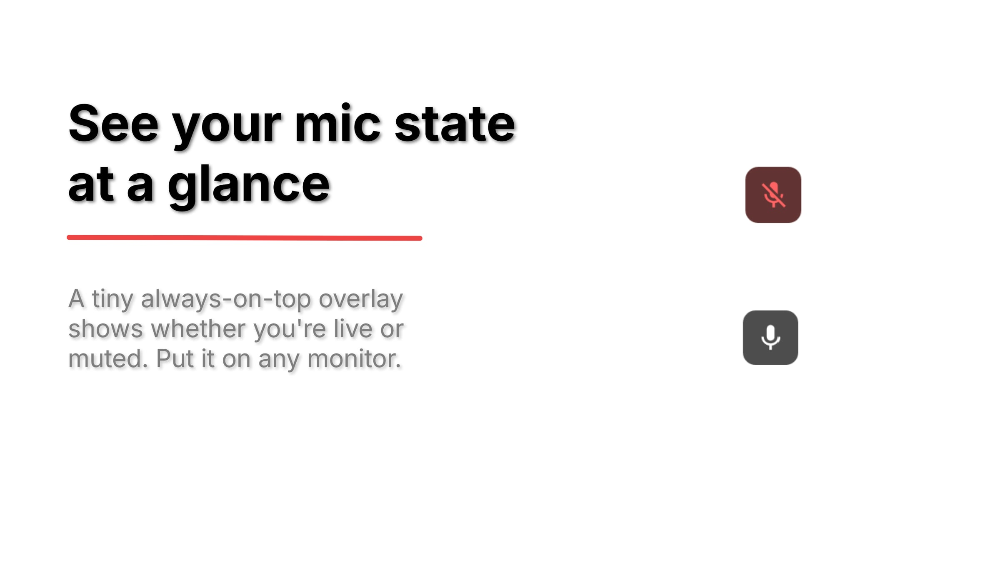
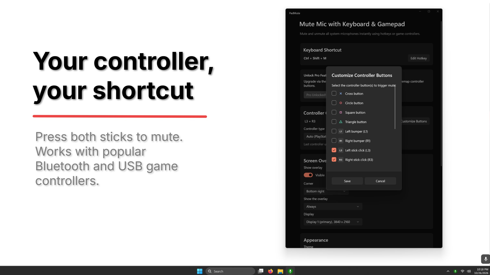
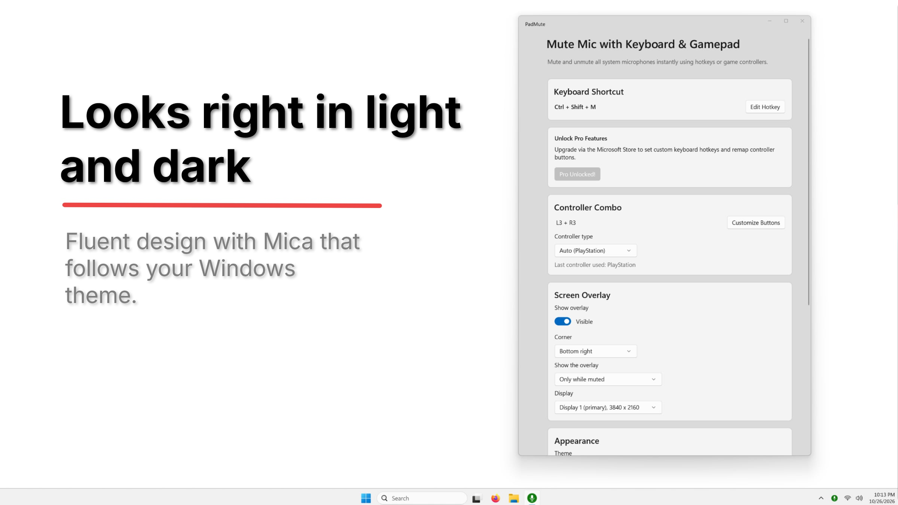

See it in action




The problem it solves
Muting mid-game or mid-call usually means alt-tabbing or hunting for a button in a chat app, and every app has its own mute control. PadMute fixes it at the Windows level: one press mutes or unmutes all of your microphones, from anywhere.
- Mutes every microphone at once, so it works with Discord, Teams, Zoom, OBS and in-game voice chat
- Keyboard hotkey, ready out of the box (Ctrl+Shift+M)
- Controller shortcut (L3 + R3) that works from the system tray, with no window open
- Xbox Series, PlayStation DualSense and DualShock 4, and Switch Pro controllers
- Floating click-through indicator that never steals focus from your game
- Put the indicator on any monitor, so it stays visible even in exclusive fullscreen games
- Windows 11 look with Mica or Acrylic and light and dark themes
- Starts with Windows, hidden in the tray
Free and Pro
Muting always works for free. Pro is a one-time purchase through the Microsoft Store.
| Feature | Free | Pro |
|---|---|---|
| Mute / unmute all microphones | Yes | Yes |
| Keyboard hotkey | Ctrl+Shift+M | Any combo you choose |
| Controller shortcut | L3 + R3 | Any buttons you choose |
| Overlay position | Bottom-right | Any of the 4 corners |
| Hide the overlay | No | Yes |
| Overlay mode (always / only while a mic is in use / only while muted) | Always | All three |
| Choose which monitor shows the overlay | Yes | Yes |
| Controller glyph styles (Xbox / PlayStation / Switch / Generic) | Yes | Yes |
Private by design
PadMute never records or listens to audio. It has no accounts, no ads and no analytics, makes no network requests of its own apart from the Microsoft Store license check, and keeps all settings on your PC. Read the privacy policy.
Questions or bug reports? support@alttabtech.com
Xbox is a trademark of Microsoft. PlayStation, DualSense and DualShock are trademarks of Sony Interactive Entertainment. Nintendo Switch is a trademark of Nintendo. PadMute is not affiliated with or endorsed by these companies.